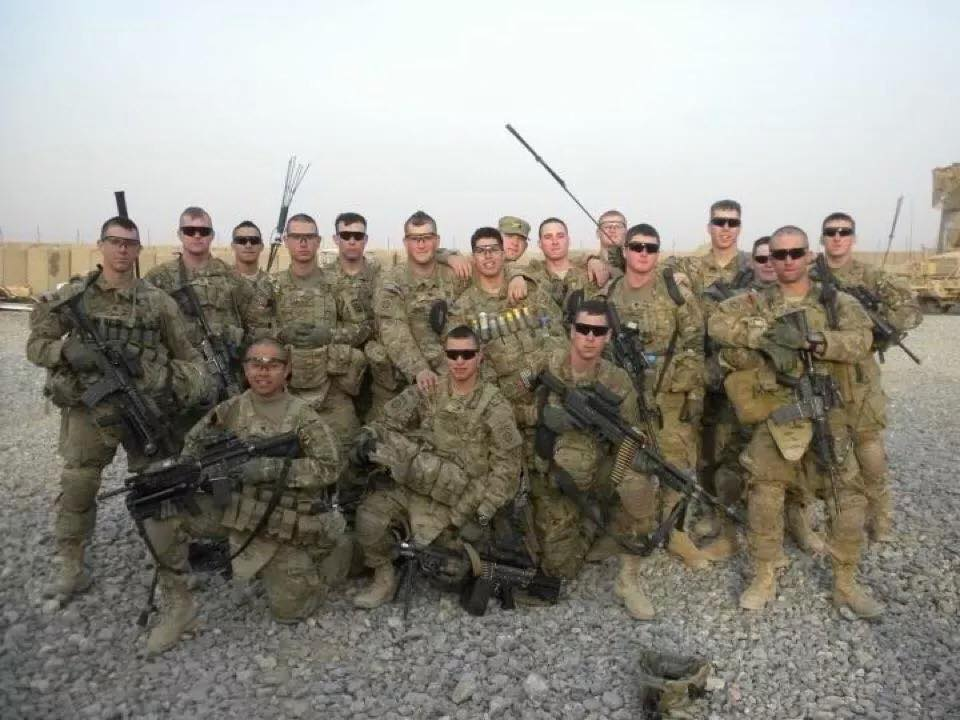

I was born in Albuquerque, New Mexico and raised third of four sons in a loving family. I am the tinkerer/mad scientist of my family. I really enjoy trying to come up with solutions to everyday problems and doing things that can teach me something new. In short, my parents' usual question to me is
"What are you working on now?"
I have many hobbies. Most of them originate from learning new techniques for building one of my projects. Some of my most frequented hobbies are:

I enlisted in the military after graduating from high school and proudly served in the U.S. Army as an airborne infantryman with the 82nd Airborne Division for four and a half years. Joining the military was my childhood dream come true and I expected to be a “lifer”, but I was injured while deployed in Afghanistan. I was shot in the arm during an enemy ambush in 2012 and would eventually be medically retired in 2014. I learned a lot about myself throughout these experiences and it has made me a more driven man.
Back to School
I began my college education at Fayetteville Technical Community College in Fayetteville, NC in 2015. I did not know what major I would want to pursue so I chose general education. I took classes from all disciplines and found that I was really interested in history and physical sciences. After attaining my associates in general education, my wife and I decided to move our family back home to New Mexico.
I started classes at the University of New Mexico in 2017. I decided to go with a Geography major because I enjoy being outdoors and doing research. I fell in love with the discipline when I found out that I could fly drones, better understand natural systems, make beautiful maps, learn programming, all while visiting historic and iconic sites. I thoroughly enjoyed my time at UNM and plan on returning to pursue my master’s degree in Geography in the near future.
I am currently pursuing a position as a GIS analyst and programmer. I wish to gain real world experience to determine what additional courses I will need to make myself a better geographer.
Thank you for your interest in my story thus far.